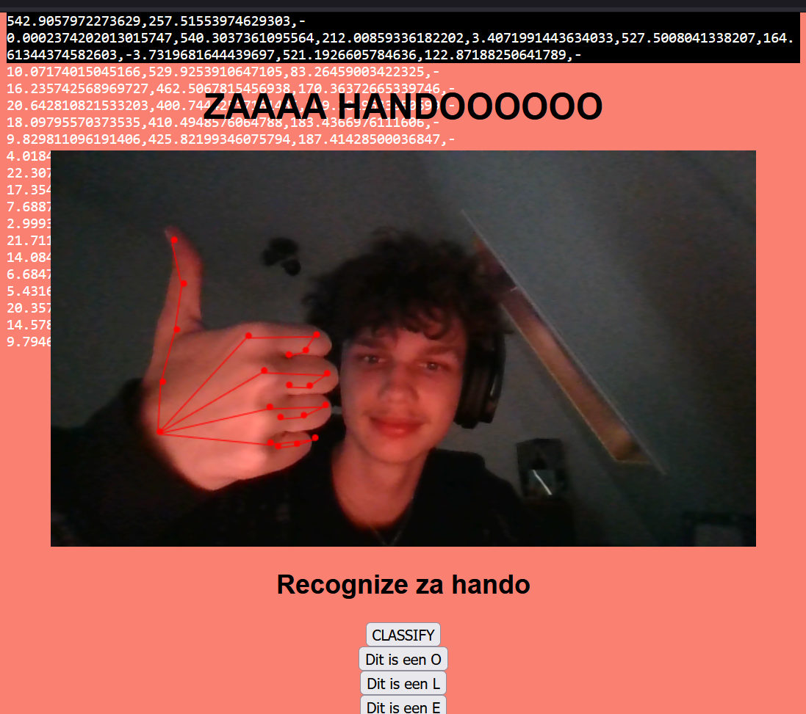
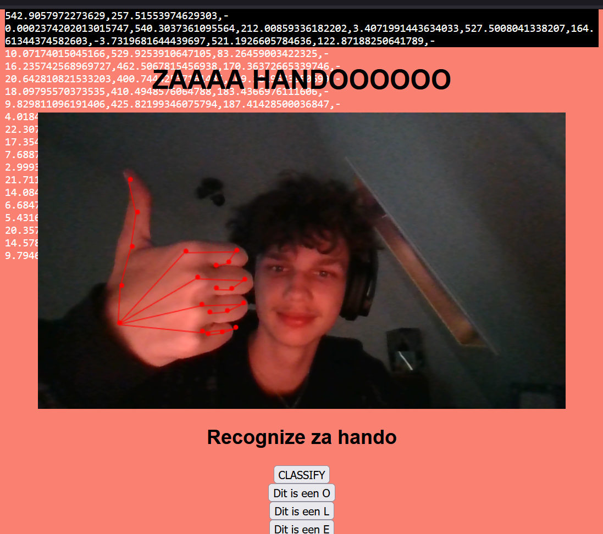

A.I. trainer
Voor dit project moesten we met 'k near' onze computer trainen om dingen te herkennen. Dus heb ik een spel gemaakt waar ik aan de hand van voorgelegde code mijn hand kan tracken, en dan heb ik mijn computer zo getrained dat ik vormpjes kan maken met mijn handen en de computer herkent die dan. Zo kan ik de letters O,L en E spellen!
Wat ik heel erg cool vond aan dit project is dat we werktte met Artificial intelligence, iets waar ik heel erg in geinteresseert ben. Het leuste gedeelte was het moment dat ik mijn camera aan kreeg en de code begon te runnen, je kan allemaal gegevens zien van het stanpunt van mijn hand en daaruit komt dan een resultaat, zoals de letter O.
 

Hier kan je ook zien wat er in de console word laten zien als je de A.I. trained. Zo kan je zelf de A.I. aangeven wat een O,L of E is. evenlater herkent de computer dit dan en geeft het dit ook aan in de console. Helaas heb ik nog niet iets gevonden om alle arrays niet te laten zien, dus die overrompelen dan de logs die worden laten zien maar het is alsnog wel heel erg leuk om mee te spelen.